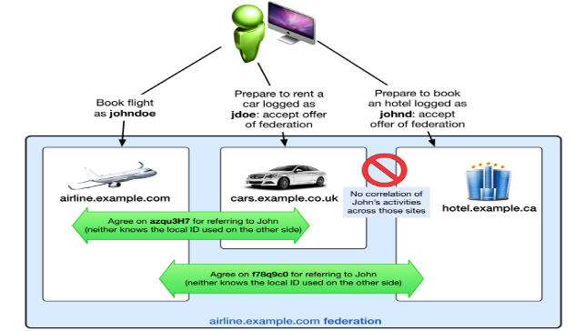
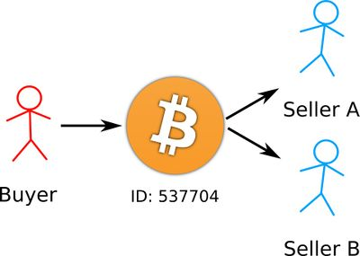

Principles of Cyber Security
Kostas Papadopoulos
Security Concepts 5
Definition 5
C.I.A. 5
Confidentiality 5
Tools 5
Integrity 5
Tools 5
Availability 6
Tools 6
A.A.A 6
Assurance 6
Authenticity 6
Anonymity 6
Threats and Attacks 7
Ten Security Principles 7
Cyber Actors 8
Cybercriminals 8
Nation States 8
Hacktivists 8
Insiders 8
Script Kiddies/ Noobs 9
Cyber Attack Life Cycle 9
Lockheed Martin’s Kill Chain Model 9
Simple Kill chain model 9
Kill Chain with Lateral movement 10
Cyber Attacks (part 1) 10
Money Theft 10
Examples 10
Personal Document Ransom 11
Examples 11
Data Breaches 12
Examples 12
Cyber Attacks (part 2) 12
DDoS 12
Examples 12
Influence Campaigns 13
Examples 13
Web defacements 13
Examples 13
Corporate Security 13
Cyber Essentials 13
Firewalls 14
Secure Configuration 14
User Access Control 14
Malware Protection 15
Patch Management 15
Advanced Cyber Defenses 16
Data Protection 16
Segregation of Duties 16
Network fragmentation and monitoring 16
Honeypots 16
Pentesting 16
Standards 16
APTs 17
Definition 17
Goals 17
Post Exploitation 17
Social Engineering 18
Definition 18
Techniques 18
Information Gathering 18
Interaction with the Target 19
Tailgating 19
Baiting 19
Mitigations 19
Cyber Warfare and Hacktivism 20
Cyber Warfare 20
Definition 20
Example 20
Cyberwar vs Conventional War 20
Weapons 21
Advantages of cyberwar 21
Hacktivism 21
Hacker ethics 22
Hacker Culture 22
Hacktivism vs Cyberterrorism 22
Hacktivist Groups 22
Anonymous 22
Wikileaks 22
Security of Critical Infrastructures 23
Introduction 23
Security 24
Cryptography 25
Types of encryption 25
Digital Signature 25
Diffie-Hellman key exchange protocol 26
Color example 27
Example from slides 28
Digital certificates 29
PKI Key players 30
Network Authentication 31
Kerberos 31
Disadvantages of Kerberos 31
SSL/TSL 32
HeartBleeed 32
Privacy and Data Anonymization 32
Privacy 32
Privacy as Confidentiality 33
Privacy as Control 33
Privacy as Practice 33
Data Anonymization 34
Attributes classification 34
Techniques 34
k-anonymization 34
l-diversity 34
t-closeness 35
differential privacy 35
User Authentication Part 1 35
Password based authentication 36
Token based authentication 37
Barcodes 37
One Time Password devices 38
Magnetic Stripe Cards 38
Smart cards 38
Electronic Passports 38
Biometrics based authentication 38
Multi-factor authentication 39
User Authentication Part 2 39
Digital Identity 39
Single Sign On 40
SAML 40
Shibboleth 42
OpenID Connect 42
OAuth (more about this later) 42
Access Control Part 1 43
AAA Systems 43
Access Control Models 43
DAC 43
Access Matrix 44
Access Control List 44
Access Capability List 44
Limitations of DAC 44
RBAC 45
Access Control Part 2 46
XACML 46
Actors & Grant flow 47
Key Components 47
<PolicySet> 47
<Rule> 48
<Target> 48
<Policy> 48
<Request> 49
<Response> 49
Access Control Part 3 49
OAuth 49
Authorization code grant flow 50
Resource owner password grant flow 50
Client credential grant flow 50
Blockchain part 1 50
Introduction 50
Transactions 51
Double spending 52
Decentralization 52
Proof of Work 53
Performance 54
Blockchain part 2 54
Smart Contracts 54
Ethereum 54
Decentralized Applications 55
Permissioned Blockchain 56
HyperLedger Fabric 57
Security Concepts
Definition
The security of a system is always relative to:
-
A set of desired properties
-
An adversary with specific capabilities
There are many security concepts, the most popular of which are
C.I.A and A.A.A
C.I.A.
Stands for Confidentiality - Integrity - Availability. Describes the main goals of security.
Confidentiality
Avoidance of unauthorized disclosure of information.
Tools
-
Encryption → Transformation of information, using a secret,
aka encryption key, so that the transformed content can only
be read by using a secret, aka decrypted key (sometimes
encryption key = decryption key)
-
Access Control → Rules and Policies that limit access to confidential information to people or
systems with a need to know. This can be determined by
identity or by the role of a person.
-
Authentication → Determination of the identity or the role of a person, based on different
characteristics: who the person is (fingerprint), what the person knows (password), what the person has (smartcard).
-
Authorization → Determination if a person is allowed to access some resources, based on
its access control policy
-
Physical Security → Establishment of physical barriers to limit access to protected
computational resources (e.g. locks, windowless rooms,
Faraday cages)
Integrity
Information has not been altered in an unauthorized way.
Tools
-
Backups → periodic archiving of data
-
Checksums → computation of a function that maps contents
of a file to a numeric value. Even a small change can
provide different output
-
Data correcting codes → storing data in such a way that small changes can
easily be detected and corrected automatically
Availability
Information is accessible and modifiable by those authorized to do so in a timely fashion
Tools
-
Physical Protection → infrastructure that keeps information available
during physical challenges
-
Computational Redundancies → computers as fallbacks in case of
failures
A.A.A
Assurance
How Trust is provided and managed in computer systems
Trust Management depends on:
-
Policies → behavioural expectations that people/systems have.
(e.g. policies about accessing songs)
-
Permissions → behaviours allowed by the agents interacting with a
person/system (e.g. permission for limited access to songs
from customers)
-
Protections → mechanisms to enforce policies and permissions
Authenticity
The ability to determine whether policies and permissions are
genuine.
The primary tool for that are digital signatures, which are cryptographic computations, that allow a person to
verify the authenticity of their documents, in a way that
achieves nonrepudiation (authentic statements cannot be denied)
Anonymity
Certain transactions cannot be attributable to any individual
Tools
-
Aggregation → combining the data from many people, so that
sums cannot be attributed to a particular individual
-
Mixing → intertwining of transactions or communication
in a way that they cannot be traced back to any individual
-
Proxies → trusted agents willing to engage in actions
for an individual in a way that they cannot be traced back
to that person
-
Pseudonyms → fictional identities that can fill in for real
ones, but are known only to a trusted entity.
Threats and Attacks
-
Eavesdropping → interception of information transmitted
through a communication channel
-
Alteration → unauthorized modification of information (man
in the middle)
-
Denial of Service → interruption or degradation of data
service/information access
-
Masquerading → fubrication of information purported to be from someone who
is not the actual author
-
Repudiation → denial of a commitment of data receipt
-
Correlation and Traceback → multiple data sources to determine the source
of a specific data stream
Ten Security Principles
Cyber Actors
Cybercriminals
-
illegal profit
-
typical attacks
-
money theft
-
personal document ransom
-
data breaches
-
Distributed Denial of Service DDoS
-
attack vectors
-
malware
- email
- botnet
Nation States
-
intelligence, sabotage activities, subversion e.g.
political election
-
typical attacks
-
influence campaigns
-
data breaches
- DDoS
-
attack vectors
-
same as cyber criminals, but more advanced
-
social media
Hacktivists
-
political, religious, social ideologies
-
typical attacks
-
web defacements
-
leakage of confidential information (e.g. wikileaks)
-
data breaches
- DDoS
-
attack vendors
-
malware
- email
- botnet
Insiders
-
Intentional Attacks →publish information on the web,
install logic bomb, steal and sell information (e.g. by
disgruntled employees)
-
Unintentional Attacks → accidentally delete/post
confidential information, visit websites with malcode,
infecting the enterprise network
Script Kiddies/ Noobs
-
desire to join real hacker groups, challenge and
curiosity
-
less skilled hackers with no strategy, no methodology, that use internet tools
Cyber Attack Life Cycle
There are many models for describing the lifecycle of an
attack. They are important because:
-
they help us analyse methods used in past attacks
-
they inform us about how past attacks succeeded, forming a
structured knowledge base
-
efficient way to protect assets against future attacks
Lockheed Martin’s Kill Chain Model
Simple Kill chain model
The following model is mainly constructed for complex cyber
intrusion, like APT attacks; therefore some phases might not be
present for simpler attacks.
Kill Chain with Lateral movement
If an attack is a multi step attack, like the Equifax example
from the slides, then the Kill chain model with include a
lateral movement step, like below
Cyber Attacks (part 1)
Money Theft
Depends on the target it can steal:
-
end users → credit cards
-
enterprises → business email compromise scams
-
financial institutions → millions of money
-
cryptocurrency exchanges/wallet → cryptocurrencies
Examples
One of the most popular banking trojan horse
Target Windows OS
Man-in-the-browser attack (keylogging)
Active since 2007
Zeus 2010 stole 70$ million, more than 100 people arrested,
detected through partnership of UK, US Netherlands and
Ukraine
Lifecycle
-
Creates registry key for persistence
-
Create Dropped.exe
-
Execute batch file to 1) delete Dropped.exe and 2) launch
Dropped.exe
-
Inject itself inside explorer.exe
-
Download configuration from C&C
-
POST data to C&C
-
Business Email Compromise (BEC)
Emerging form
of scam with little technical expertise needed.
Request
large money transfer pretending to be CEO through spoofed and
cleverly crafted
emails.
Hijacking
legitimate invoice to change account number to
scammer’s.
Hackers used
SWIFT credentials to execute fraudulent transactions over the
SWIFT
network;
requested 1 billion, got 101 million, 38 of them recovered. More
specifically, the attackers did not compromise SWIFT, but used
valid credentials, acquired either by insiders or by
breaching bank’s network. They used malware to stop the
printer from printing SWIFT transactions.
-
Cryptocurrency Wallets/Exchanges
Given the recent cryptocurrency boom, and the fact that crypto
exchanges managed
many different
assets, many exploited their vulnerabilities to steal money.
(Coincheck)
Personal Document Ransom
Attacker sends email with subject referring to invoice or bill,
with an attachment that is infected with malware, which
-
prompts users to execute macro
-
launches powershell and executes final payload
Then the ransomware encrypts files, which the only way that can
be decrypted is by paying the ransom, usually in bitcoin.
Usually decryptor is released by security firms after some time. Usually a
message is shown to explain wtf just happened.
Examples
May 12 2017 - thousands computers infected in a matter of
hours.
Self-propagate and spread across local networks and
internet
EternalBlue exploit used to execute arbitrary code on a
targeted computer
200K computers infected in 150 countries
National Health Care in the UK, Nissan and Renault sites halted
production
Hundreds of millions of economic losses
June 27 2017 - similar to WannaCry, but mostly focused in Ukraine
Used trojanized version of MEDoc, tax and accounting software
in Ukraine
Spread to IP addresses linked to infected systems
Steal credentials from Windows Credential Manager
Propagate either by EternalBlue or stolen credentials
-
RansomWare as a Service (RaaS)
Malware
developers create ransomware kits to easily create and customize
new
ransomware
variants, in exchange for a percent of the profits. Shark 2016 is distributed through a website, that gives a share
of 20% automated to the Shark creators.
Data Breaches
Examples of Stolen Data → names, email addresses, date of
birth, numbers, hashed passwords. According to reports, overall
there have been 7.1 billion identities stolen (1 for each person
in the planet!)
Examples
Yahoo! revealings:
-
September 2016 → breach in 2014 led to 500 million
being compromised
-
December 2016 → breach in 2013 led to more than a
billion compromised
-
October 2017 → actually all its 3 billion accounts
compromised
Cyber Attacks (part 2)
DDoS
Aims at making a service unavailable for the intended users by
overloading its resources
This is commonly due to service request flooding
Distributed Denial of Service is when we have flooding traffic
by many different sources
Large groups of computers, networked together and combining
their computing power to cause DDoS attacks. Built from
vulnerable systems with no concern to whom they belong (eg IoT
devices). Usually controlled by a C&C infrastructure
IoT devices are preferred because:
-
poor practices → default passwords and open ports that
users cannot change
-
no built-in mechanisms for automatic firmware update
notifications
-
owners are unaware of their use; forget security
updates
Examples
-
Mirai → botnet used for some of the most successful
DDoS attacks, including the web host OVH and popular
websites such as Netflix, Twitter and Paypal.
Works by continuous scanning for vulnerable IoT devices over the
internet and infects them with malware that forces them to
report to a C&C.
Influence Campaigns
Examples
Spear phishing email sent to John Podesta, chairman of 2016
Clinton presidential election.
Web defacements
A kind of electronic vandalism whose main goal is to attract
media attention. It is mostly done by hacktivists, that exploit
known/unsophisticated vulnerabilities, choosing targets who are
easy to attack.
Examples
The “Netherlands Operation”, which started as a political quarrel between the
Netherlands and Turkey. In March 11-12-2017 many websites were
targeted, also by defacement.
Corporate Security
Cyber Essentials
Basic requirements for IT infrastructure
- Firewalls
-
Secure configuration
-
User access control
-
Malware protection
-
Patch management
Firewalls
Ensure that only safe and necessary network services can be
accessed from the Internet.
-
Use firewalls to reduce exposure to attacks
-
Boundary firewalls
-
Host-based firewalls
-
Firewall rules to block/allow traffic on the basis of
- Source
- Destination
- Protocol
-
Block unauthenticated inbound connections
-
Every inbound rule that accepts connections must be
motivated and documented
-
Administrative access
-
Change default password
-
Disable remote access
-
Entirely
-
From the Internet
Secure Configuration
Ensure that computers/devices are configured to reduce
vulnerabilities and provide only strictly required
services
-
Default configurations are not always secure
-
Administrative account with known default password
-
Unnecessary user accounts
-
Unnecessary applications and services
-
Remove/disable unnecessary accounts and software
-
Change default/guessable passwords
-
Disable auto-run features
-
Authenticate users before allowing Internet-access to
sensitive data
User Access Control
Ensure user accounts are assigned to authorised individuals
only and provide access to actually required resources
only.
-
Helps reducing the risk of information being stolen or
damaged
-
Compromising accounts with special privileges can result in
severe damage
-
Make significant and security relevant changes to the
OS
-
Create/update/remove accounts and their privileges
-
Setup a process to create and approve a new user
account
-
Always authenticate users before granting access to
applications/devices
-
Remove/disable accounts when no longer required
-
Use two-factor authentication
-
Use administrative accounts to perform administrative
activities only
Malware Protection
Restrict execution of known malware and untrusted
software.
-
Helps reducing the risk of harmful code causing
damage
-
Potential source of malware infection
-
Email attachments
- Downloads
-
Direct installation of unauthorised software
-
Problems deriving from malware infection
-
Malfunctioning
-
Data loss/leakage
-
Always up to date, at least daily
-
Automatic scan when files are downloaded, opened or
accessed from a network folder
-
Automatic scan of visited web pages
-
Blacklisting of malicious/suspicious websites
-
Application whitelisting
-
Application sandboxing for code of unknown origin
Patch Management
Ensure devices/software are not vulnerable to known security
issues for which fixes are available.
-
Known vulnerabilities are likely to be exploited soon by
attackers
-
Vendors release patches for product they still
support
-
As soon as new vulnerabilities are discovered
- Periodically
-
Keep all software updated
-
Keep all software licensed and supported
-
Remove any unnecessary software
Advanced Cyber Defenses
Data Protection
Basically, understand the importance of data. Who would want
it? What can they do with it?
- Encryption
-
Fragmentation, so that attackers would need to access all
fragments
-
Sanitize, in order to remove PII information
-
Backup periodically
Segregation of Duties
Use more than one person to execute a critical task. “If
a task requires N processes, then N processes must be
compromised to execute the task”.
-
Banking: a sensitive order has to be authorized by at least
2 people from 2 different services
Network fragmentation and monitoring
-
Fragmentation → divide the network into
-
1. Business processes
-
2. Necessary exposure
-
3. Risk levels
For example, for a corporation, we could split its network to
1. offices, which need access to the internet, 2. front-end,
which needs to be accessed from the internet, and 3. backend,
which is only accessed by privileged users. Meanwhile, all
levels should be monitored by a firewall.
-
Monitoring → observe all traffic from/to the network
-
For example, when someone scans the whole network; is it a administrator or an intruder? We can use machine learning
techniques to do that.
Honeypots
They are basically sandboxed machines that deliberately lure an
attacker, in order to safely analyse a new malware and gather
intelligence about the methods of an attack.
Pentesting
It is one of the most successful techniques to check the
security of a network. Can identify how an attacker would breach
the system. Usually security companies are hired for that.
Standards
Also, depending on the relevant business sector, there are many
standards that have been released, such as standards for credit
cards, health-insurance and more.
APTs
Definition
APT stands for Advanced Persistent Threats
-
Advanced: usually sophisticated attacks, using zero day
vulnerabilities sometimes
-
Persistent: long-term attacks, using stealthy techniques to
remain to the target machine till the mission is
accomplished
-
Threat: malicious nature obviously
Goals
APTs are organized, well-funded groups with great technical
skills who usually aim at:
-
stealing information from companies
-
compromise business network
-
gather intelligence
-
damage organization
-
exfiltrate data
-
One good example is the Carbanak “gang” which
was an APT aiming at financial institution. The operation
was running for 2 years approx. (making it more persistent
than advanced) and it collectively stole around 1 Billion!
Post Exploitation
APTs usually have a post exploitation phase since, they do not stop until they achieve their goal.
Now post exploitation is defined by four characteristics:
-
Persistence → once you establish a stable access to a
network, you need to keep that connection and gain
persistence over the infected machine. There are a couple of
ways you can do that. For example in Windows OS, you can
take advantage of:
-
auto start features
-
hijack DLLs or executables
-
changes to Master Boot record or BIOS
-
C&C Communication → then you need to establish a remote connection
with a command and control server, in order to be able to
control the machine with remote commands. There are two main
models of C&C communication, using the C&C hub
In the push model, the attacker sends commands and receives results directly
In the pull model, the attacked can leave commands at the hub, which will get
retrieved periodically by the compromised computer and executed.
-
Lateral Spread → searching the internal network and gain access to other machines as well. This can be done by
network browsing, credentials searching, analysis of the
already infected machine.
-
Data exfiltration → in case of data breaches, you would want to
siphon data to remote servers. You can use staging servers
to gather information and apply transformations like
aggregation, compression etc. However there is a trade off
between speed/risk, since the faster you gather data, the higher the chance
of detention
Social Engineering
Definition
In the cyber security context, social engineering is the act of
psychologically manipulating people into performing some action
or divulging specific information.
Techniques
There are many techniques used for Social Engineering.
Information Gathering
-
Information on the web (e.g. website of the company)
-
email addresses
-
phone numbers
-
open job applications
-
executives and employees
-
social network mining
-
Dumpster diving: Sometimes many employees instead of using
a shredder for confidential information, they simply throw
it in the trash; therefore someone may find credentials,
email addresses and more
-
Shoulder surfing: simply looking above the shoulder of
someone while they are typing credentials on their
computer
Interaction with the Target
-
Phishing: sending emails with malicious intent, appearing
to be from reputable sources with the goal of influencing or
getting information, e.g. government, financial
institutions, tech support, high level management and so
on.
-
Vishing & smishing: same as phishing but for voice
calls and text messages; attacker may use caller id spoofing
tools
-
Physical Interaction: attackers shows up in person,
pretending to be from tech support, willing to fix broken
facilities and so on.
Tailgating
Accessing a secure building without any card or biometrics,
just by simply waiting for authorized personnel to enter and
follow them. They are likely to hold the door for you, either by
politeness, or because you are showing a fake badge, or because
they are your partners.
Baiting
Intentionally leaving removable media in places where everyone
can pick them up. Imagine it as a trojan horse.
Mitigations
I’m too lazy to write about the mitigations so here is
a nice copy-pasta from the slides
Cyber Warfare and Hacktivism
Cyber Warfare
Definition
Cyber Warfare is defined by a systematic, targeted series of
cyber attacks, with clear intent of destroying or disrupting key
facilities of a country. The battlefield includes the
cyberspace:
-
greater efficiency → better services but increased
vulnerability
-
network convergence → everything is connected to a
common network
-
channel consolidation → concentration of data in a few
providers
-
networked forces → the internet has promoted military
innovation
It has the same objectives as conventional war:
- espionage
- sabotage
- propaganda
Example
An example of some targeted attacks happened a couple of years
ago, in 2007 against Estonia. Apparently some day in April, a
reallocation of a monument in favour of the Soviet Union
happened, and the next day a series of disruptive cyber attacks
started and destroyed some major country facilities
-
DDoS attacks
-
ministry websites shut down
-
prime minister party’s website defaced
-
botnets begun attacking private sites and servers
-
banks shut down
-
national emergency toll number 112 disabled
Estonia blamed the Kremlin, however Russia denied this and
attribution was never given. Then Estonia asked for intervention
from the NATO, but NATO refused, since no physical damage or destruction had occurred.
Cyberwar vs Conventional War
The impact of the original attack is not enough to judge
whether it should be considered as “war”. We should
also weigh in the consequences it brings afterwards.
Based on international law, the following are not acts of war
and DO NOT justify the use of force as a response
- propaganda
- harassment
- hacktivism
- crime
Whereas, the following, even though they might violate the
domestic law of the victim country, are still not considered as
acts of war by the international law.
-
intelligence collection
-
cyber reconnaissance
At the end, the only way to determine whether an attack is an
act of war or not comes down to the question → “Is it
of your interest to declare it so?”
Weapons
-
We can draw some parallelisms when it comes to
weapons used in conventional war and cyber war. In
conventional war, a missile has:
-
a delivery vehicle (rocket engine)
-
a navigation system (that tells it how to reach the target)
-
the actual payload, that harms the victim
-
Something similar happens to cyber weapons. However,
cyberwar seems to have some advantages over conventional
war
Advantages of cyberwar
Cost effectiveness
-
no need for expensive equipment or large number of troops
and weapons
-
everyone with a computer and access to internet can
engage
-
tools for attack are free and publicly accessible
Anonymity
-
hide behind false IP addresses
-
impossible to trace back to the attacker
Attribution
-
it is impossible to place attribution to someone, since
they can deny and claim their own machine got hacked and
used as part of a botnet
-
blaming the wrong actor is an act of war[a]
Others
-
attack at the speed of light
-
no physical casualties
-
aims at disruption of opponent
-
exploitable vulnerabilities increase as time
progresses
Hacktivism
Hacktivists are politically motivated hackers, driven by the pursuit of social change and not looking after personal profit.
Hacker ethics
-
information should be free
-
authority is bad; decentralization is better
-
technology can be used for the good of humanity
-
hackers should be judged only on technical skills
-
everyone should have unlimited access to computers
-
hackers activities should be considered as art
Hacker Culture
-
conspiracy theorising
-
obsession with privacy and secrecy
-
membership fluidity
-
anarchist in nature
-
culture of humour and creativity
Hacktivism vs Cyberterrorism
-
both use technology as a tool
-
cyberterrorists use violent methods and aim at destruction
-
hacktivists do not use violent methods aim at disruption
Hacktivist Groups
Anonymous
-
created in 4chan in 2003
-
usually referred as “anons”
-
guy fawkes mask as disguise
-
started as pranks; has evolved into politically motivated
organization
-
They support all that stuff above about freedom of speech,
free distribution of information etc.
-
Members can join and leave whenever they want
-
No hierarchy; however there are some members with high
organizational and technical skills who orchestrate
attacks
-
relies on critical mass for DDoS attacks
-
community-based communications like message boards, file
sharing etc
-
have launched a series of massive attacks over the years,
the most notable of which: against church of scientology,
operation to avenge julian assange, operation as revenge to pirate bay shutdown,
operation against child pornography sites, against Israel
for its actions in Gaza etc.
Wikileaks
Founded in 2006 in Iceland by Julian Assange. Its main goals
are to make confidential information publicly available, when it
concerns the general public, and provide a secure place for
journalists and whistleblowers to enclose private archives. In
10+ years of operation, it has leaked more than 10 million
documents It also has bulletproof hosting, with many servers
around the world. It has leaked documents about politics,
governance, economy, military and so on.
Security of Critical Infrastructures
Introduction
Critical Infrastructure of National Critical Infrastructure are
all the elements, services, people, networks, property,
information that allow a country to operate and upon which daily
life depends on. Some examples are:
- Finance
- Military
- Government
- Electricity
- Water
-
Communications
- Defense
- Health
- Transport
CI are managed by the so-called Industrial Control Systems
(ICS), which sometimes they are hiding in plain sight, but
monitor many processes of daily life that are often taken for
granted.
The components of an ICS are:
-
SCADA : supervisory control and data acquisition
system
-
RTU : remote terminal units
-
LTU : local terminal units
-
PLC : programmable logic controllers
-
HMI : human machine interface
-
IED : intelligent electronic devices
The terms SCADA and ICS are often used interchangeably
Security
ICS implement the concept of security through obscurity. They use proprietary and not well known software,
interfaces and protocols. Apart from that they are not
considered very secure:
-
vendors publish manuals online
- ip leaks
-
some devices can be bought cheaply
There have been cases where SCADA has been proved insecure.
-
Ohio blackout in 2003: software failure of a SCADA system in a utility company
in Ohio. Local plants tried to support the failed lines,
however they soon became overloaded and failed as well. Then
power lines in Michigan did the same things, resulting in
their failure as well. Grids in Canada disconnected as well.
Single point of failure caused domino effect!
-
Stuxnet: cyber attacks against iranian nuclear facilities, which
aimed to disrupt Iran’s nuclear program. They targeted
centrifuges used for uranium enrichment. Highly
sophisticated malware was used, with multiple zero day
exploits. However the SCADA system did not have access to
the Internet, so the attack must have originated by a USB
stick or something. It got spread over the LAN and targeted
Siemens S7 devices. Damage in million of USD.
-
BlackEnergy: power outage to a region in Ukraine. Three different
electricity companies were targeted. Approximately, 225,000
people lost power for 1 to 6 hours. IT infrastructure
component disabled, DDos on call center, many files got
removed.
Cryptography
-
A hash function h maps a piece of information to a fixed-length value
x = h(P), which is called hash value or digest of P. It
ensures integrity of x, meaning that if someone knows x,
they cannot reconstruct the information P.
(SHA-3,SHA-256)
Types of encryption
-
Symmetric Encryption → the same key is used for encrypting
and decrypting messages. It ensures confidentiality of x.

-
Public Key Encryption → sender encrypts the message with
the public key of the recipient, which later decrypts it
with their private key. (RSA, DSA)
Digital Signature
Digital signatures are something like electronic signatures
that help at verifying the validity of a message x. They ensure integrity of x, source authenticatication and non-repudiation. Below, Bob signs a message, by generating a digital signature
with his private key, and then Alive verifies that signature, using Bob’s public key.
However, there is a problem arising with symmetric key
cryptography. Since, the recipients use the same private
(secret) key to ensure secure communication over a channel, how
did they exchange that key in what at first was an insecure
channel? There comes the Diffie-Hellman key exchange protocol.
Diffie-Hellman key exchange protocol
-
allows two users to exchange secret key, which can be later
used for symmetric encryption
-
limited to the exchange of secret values
-
its effectiveness depends on the difficulty of computing
discrete logarithms
Color example
-
generate public paint
-
generate secret color
-
mix public paint with secret color and share the result
publicly
-
mix received result with private color
-
cha cha cha real smooth we got the same secret color!
This can happen because this operation is COMMUTATIVE. To produce let’s say orange, it does not matter whether
you mix red with yellow or yellow with red first. The order of
the operations does not matter, the end result will be the
same.
Example from slides
[b]
Basically, when given a public key q and a primitive root of
that let’s say a.
-
calculate random public numbers for alice and bob so that
Xa and Xb < q
-
calculate public key Ya = (a ^ Xa) mod q and Yb = (a^
Xb) mod q
-
those keys are then being exchanged again in public
-
so secret key is K = (Yb ^ Xa) mod q and K = (Ya ^ Xb) mod q
However, man in the middle attacks can still happen, by having someone who intercepts both
communications and having established a secret key with both
parties to makes them think they communicate directly with each
other. Therefore, we need a way so that:
-
the recipient knows with certainty the public key of the
sender in order to verify their digital signature
-
the sender knows with certainty the public key of the
recipient, to send the message
Digital certificates
-
Binds an identity/company to their public key.
-
Standard format X.509
They have mandatory fields like
- version
-
serial number
- signature
- issuer
- validity
- subject
- public key
… and optional ones like:
-
issuer unique identifier
-
subject unique identifier
- extensions
- key usage
PKI: Public Key Infrastructure is the set of hardware, software,
people and policies that together with the technology of
asymmetric encryption facilitate the VERIFIABLE association of a public key with that
owner’s private key.
PKI Key players
-
CA : Certification authorities are trusted third parties
which are responsible for issuing, revoking and distributing
digital certificates. Companies like that are Verisign and
Comodo. They sign the issued certificates with their private
key so it is important of keeping the private key secret.
-
RA : Registration authorities work for the CA, but do
not directly issue certificates. However, they verify the
contents of a certificate before its issuance by the CA.
They are known to the CA by their name and public key.
-
PKI Repositories
-
PKI Users
Certificates often can be revoked due to:
-
compromise of private key
-
human resources reasons
- expiration
-
company changes name, reallocates etc
So, in that case, the revoked certificates gets published in the PKI repository in the CRL (Certificate
Revocation List) by the CA.
Ok but how are certificates being used? Suppose that someone wants to verify a digital
signature.
-
First, we will fetch the certificate of the sender
-
Then we will fetch the CRL
-
We will check the certificate against the CRL
-
Check signature using certificate if valid
However there have been attacks to PKI
-
Comodo case : someone compromised RA certificates gaining
access to PKI and issuing 8 certificates for domains like www.google .com etc. The certificates were immediately revoked,
however the attacker might have used them to create fake web
sites and gather login credentials of users. Domain owners
were notified about the attack. However, Comodo is still in
business!
-
DigiNotar case: internal network of DigiNotar got breached and
soon the attacked got access to CA servers, starting slowly to issue
rogue certificates. At the end of the attack, more than 500
certificates had been issued along with a rogue certificate
for google.com which allowed the attacker to conduct man in
the middle attack and gather login credentials of more than
300,000 Iranian’s gmail accounts. DigiNotar revoked
the certificates and then it went bankrupt.
Network Authentication
Kerberos
Kerberos is an authentication protocol, designed in the
80’s in MIT and not used anymore. It is based on the idea of centralized authentication server and relies on symmetric encryption.
The goals of it, is that the user password should never travel
over the network and never stored in the client’s machine.
Ok, so to do that it uses the so called Key Distribution Center
(KDC)
In a very high level overview, it works like this:
Suppose the client above wants to access the resources of the
file server. They must be first authenticated from the KDC. THE
KDC includes an Authentication Server and a Ticket Granting
Server (AS and TGS) along with a database with all the
passwords.
-
user sends request to AS encrypted with their private
key
-
AS looks up this user’s private key in the database
and decrypts the message with that
-
AS issues a Ticket encrypted with a shared secret key
between the AS and the TGS and sends it back to the
client.
-
Client sends the Ticket to the TGS this time
-
TGS decrypts the Ticket by using the shared secret key
between itself and the AS
-
TGS issues a Token encrypted with ANOTHER secret key,
shared among the TGS and the file server and sends it back
to the client
-
Finally, the client receives the Token and sends it to the
file server, which later decrypts with the secret key
between itself and the TGS and allows the client access to
its resources. Oof
https://www.youtube.com/watch?v=_44CHD3Vx-0 for better explanation
For more technical explanation, visit slides
Disadvantages of Kerberos
-
Single point of failure - KDC is down? Noone can authenticate!
-
Requires synchronization of clocks between client and KDC
server, since tickets have timestamps and expirations
-
Vulnerable to password guessing attacks
-
Assumes user’s workstation is secure
SSL/TSL
TSL is the standard protocol for internet security that is used is nearly every web browser nowadays. Its primary goal is to provide data
integrity and privacy between two communicating applications.
TLS consists of two protocols
-
Handshake protocol → use of public-key cryptography to
establish common secret key between the two
applications
-
Record protocol → use of that common secret key for
further secure communication between client and server
During the handshake protocol, the communication between the
client and the server will be like this:
-
Client sends ClientHello message, containing protocol version he is running
and cryptographic algorithms he supports
-
Server sends ServerHello message, containing highest protocol version that both client and server support
along with the cryptographic algorithm they are going to
use.
-
Server sends ServerKeyExchange message, along with his public-key certificate, containing
either his RSA or his Diffie-Hellman public key
-
Client sends ClientKeyExchange message, containing his secret key encrypted with the
public key of the Server (if using RSA)
HeartBleeed
HeartBleed was a bug in OpenSSL, a common used implementation of some versions of SSL/TSL. The bug was present since 2012, but was discovered in 2014.
Still a lot of servers are vulnerable. The exploitation of the
bug allows us to get information about parts of the server
memory, by sending some carefully crafted packets.
Privacy and Data Anonymization
Privacy
Solove’s Privacy Taxonomy: Information are collected about a specific data subject, they are
processed by the data holders and disseminated through illegal
acts.
PETs : stands for Privacy Enhancing Technologies, they are
basically methods someone can use to ensure better
privacy.
-
Privacy is often defined ambiguously, therefore we have 3
main different privacy researched models
Privacy as Confidentiality
~ The right to be left alone ~
Promotes things like
-
Data anonymization
-
Secure messaging
-
Anonymous communication
Example is CopyCat or Signal messaging
Privacy as Control
~ The right to decide about what information will be disclosed
to others and under what circumstances ~
Promotes things like
-
Anonymous Credentials
-
Privacy Policy Languages
-
Purpose based access control
Privacy as Practice
~ The freedom from unreasonable constraints in the construction
of someone’s identity ~
Promotes things like
-
Privacy nudges
-
Feedback and awareness tools
Data Anonymization
Attributes classification
Database attributes are divided into 3 categories
-
Explicit identifiers → identify a user directly, like name, passport
number etc
-
Quasi identifiers → date of birth, age, zip code, phone number
-
Sensitive attributes → records that we assume the subject would like
to hide, like salary or disease
Now, in order to protect explicit identifiers, there are two
ways.
-
Tokenization : generates unique token for the input data
-
Substitution : substitutes an attribute value with that token or
another attribute
Techniques
However, protecting only the explicit identifiers is not
enough, therefore we have four more techniques to ensure further
data protection.
-
k - anonymization
-
l - diversity
-
t - closeness
-
differential privacy
k-anonymization
k-anonymization is based on the idea that each record has to be
indistinguishable from k-1 other records in the database with
respect to the quasi identifiers. Each class of equivalence has
to contain at least k records which have the same values as the
quasi identifiers.
There are two ways to implement k-anonymity:
-
Generalization → dividing the data into broader categories they
fit in, for example instead of having age=19 we could have age <= 20.
-
Suppression → when there is too much generalization that
results into loss of information
However, despite its advantages k-anonymity is susceptible to 2
types of attacks
-
Homogeneity → when the records in an equivalence class
are identical, then the attacker can easily trace back the
individual
-
Background knowledge → if the attacker already has
some background knowledge about the person, they can
associate them with an equivalence class
l-diversity
l-diversity comes as an extension to k-anonymity to ensure that
there is enough variation
-
Distinct l-diversity: each equivalence class must have at least l
“well-represented” values
-
Entropy l-diversity: this is not enough, the values need to be distributed
evenly enough
However, l-diversity still has its limitations:
-
Does not consider overall distribution of sensitive values
(take HIV+ HIV- for example)
-
Does not consider semantics of sensitive values
t-closeness
This is an easy one; distribution of sensitive data in each
quasi identifier equivalence class should be “close”
to the distribution in the overall database.
differential privacy
The intuition behind differential privacy is that the
participation of one person does not change the outcome in a
statistical database. For that purpose, differential private
algorithms are used to ensure that an outside observer cannot
tell whether a person is included in a database or not.
User Authentication Part 1
User Authentication is a fundamental building block of security
It consists of two steps:
-
Identification: present an identifier to the authentication
system
-
Verification: verify the identity of the entity which
presented the identifier
Three possible approaches
-
smth the user is
-
smth the user has
-
smth the user knows
Password based authentication
-
widely used user authentication method
-
user presents username and password requesting access to a
resource
-
system compares password with password file
Password overloading problem → users share same passwords
across multiple accounts. Therefore, if someone gets access to
one of their accounts, they can use same password to gain access
to multiple. In average, users use 4 passwords for 22 services on the web.
Passwords can be cracked. One of the most common ways are brute
force attacks, which is basically trying every possible
combination. If a password uses A letters and has length n, then
there are at most |A|^n tries to crack it.
Size matters! The longer the password, the more difficult to
crack. A 7 character password can be cracked in milliseconds,
whereas a 12 character one might require 2 centuries.
Password strength can be measured in two ways
-
normally computed as said before |A| ^ n.
-
another measure is entropy.
If the entropy of a password is b, then that means 2^b more
attempts are required.
zxcvbn is a tool that can match a password against all possible
patterns
- dates
-
dictionaries of common words
-
keyboard patterns
-
repeated characters
It also calculates the entropy for each matched pattern
password entropy is the sum of the entropies of all its
constituent patterns
Online dictionary attacks are also pretty cool; they try passwords associated with
user, try words in a dictionary or popular passwords
Countermeasures
-
set big enough password length
-
change password periodically
-
avoid obvious passwords
-
avoid machine generated passwords
Other countermeasures
-
lockout after many unsuccessful login attempts
-
throttling; delays when trying to login after many
tries
-
protective monitoring; detect unusual activity
-
password blacklisting; check if pwd in list of common
words
Offline password attacks
-
attacker gains access to password file, gains hashed
password
-
tries to crack it by using dictionary of commonly used
passwords
-
or uses rainbow tables
Countermeasures
-
password salting ; append random number, salt
-
password file access control
-
keep hashed passwords separated from User ids
Many times attacker can craft websites that look like
legitimate ones and use phishing to redirect the user to them, prompting them to enter
their credentials. Also, they can intercept password exchanged through plain text over an insecure
communication channel (HTTP).
Countermeasures
-
ensure you use SSL/TSL from your browser, check certificate of the visited
website
Other types of attacks include using a keylogger, shoulder-surfing, dumpster diving and the countermeasure is to be smart.
-
there are many tools that can be used for offline password
cracking, or extracting password hashes from local machines,
include L0phtrack, pwdump, john the ripper, and online
websites like crackstation.net, cain and abel and
ophcrack
-
there also tools for online password cracking, for example
when you have an online service to crack like an ssh
connection, like Hydra
There are 3 methods of password cracking
-
brute force → combination of random numbers and characters;
very slow, crack can take days, weeks, years, you get the
point. 100% successful
-
dictionary → uses a dictionary or wordlist to crack
password, quickest attack method, rainbow tables can also be
used
-
hybrid → combination of dictionary and brute force; it
can use certain patterns to capture common user behaviours
like replacing o’s with 0’s and so on. Faster
than brute force, slower than dictionary.
Token based authentication
The user has to present a token to be authenticated.
Barcodes
-
mainly developed to increase efficiency at grocery
checkout
-
first generation were just vertical lines of
variable-width; used one dimensional encoding scheme
-
second generation use two-dimensional patterns
-
airline industry uses them in boarding passes, that are
scanned before boarding
-
the barcodes are encoded with an internal unique
identifier, identifying the owner of the ticket, so that the
airline could verify they purchased that ticket and they can
provide photo identification
-
however, apart from airports, barcodes are not usually used
for authentication; mostly for convenience; Keep in mind,
that since they are images, they can be easily
duplicated
One Time Password devices
-
generate a number unique token every couple of
seconds
-
hardware or software based
-
time-based one time password
-
secret key and time of day
-
hashed functions
-
timestamps are synchronized with NTP
Magnetic Stripe Cards
-
plastic cards with magnetic stripes which contain
information about the card owner.
-
1st track contains cardholder’s name and account
number
-
2nd track contains expiration date, issuing bank, format of
the track
-
however, they are pretty vulnerable because they can be
easily read by using a magnetic card reader, and reproduced
by a magnetic card writer.
Smart cards
-
smart card reader is required for that, which stores public
and private keys of the user and participates in a challenge
response protocol with the reader
-
user enters pin
-
computer sends a challenge B
-
smart card generates random value A, A||B and sign (A||B)
with the private key
-
computer verifies
Electronic Passports
-
RFID communications encrypted with private key
-
however, private key is usually passport number, date of
birth and expiration date
-
so if someone has physical access to the passport or knows
some stuff about the owner, they can easily reconstruct the
key
Biometrics based authentication
Biometrics are usually measures that can uniquely identify a
person based on his physiological or biological traits.
Biometric systems use sensor scanners the read biometric information, which they compare with
stored templates.
Requirements for biometric authentication
-
universality - everyone must have this trait
-
distinctiveness - each person must have noticeable differences in
that trait
-
permanence - trait doesn’t change over time
-
collectability - easy to be collected and determined
Candidates
- signature
- fingerprints
- iris scan
-
voice recognition
-
face recognition
-
gait recognition
-
maybe heart beats??
Limitations
-
accuracy of matching algorithm
-
easy forging of biometric traits
-
social acceptance
Multi-factor authentication
-
password and sms
-
password and iris scan
-
smart card and fingerprint scan
User Authentication Part 2
Digital Identity
A digital identity is the digital representation of the information known
about an individual:
-
name and surname
-
national insurance number
-
phone numbers
- addresses
-
usernames and passwords …
A digital identity management system provides a centralized solution that manages user’s
digital identities and user’s access to
resources/services
It has 3 main players
-
subject: system entity upon which something can be asserted
-
asserting party or identity provider: system entity that creates assertions about the subject
-
relying party or service provider: system entity that consumes assertions about the subject
Single Sign On
According to Single Sign On, the user only has to authenticate
once and then access all the resources provided by the service
provider.
-
Authentication is handled by the SSO service, which
maintains the identify of the user
-
When the user wants to authenticate again, the service does
that for them
Federated Identity → a set of organizations, who have reached an
agreement to establish a common shared identifier to refer to a
subject. Basically means that if you can access the resources of
one organization, you are also authenticated to access the ones
of the other.
-
Facilitates Single Sign on
-
Reduces the cost of maintaining many different digital
identities

For example, here the green guy, by authenticating himself to
the first website, he can also access the resources of the
second and third one, without having to login again, supposing
that he accepts the offer of federation that the airline has
with the car renting and the hotel companies. Be careful though!
The second company doesn’t provide an offer of federation
with the third.
Anyway, there are 3 main protocols to facilitate or implement
Single Sign On. The first two are XML based and the last one is
JSON based.
SAML
-
SAML is an XML based protocol that facilitates SSO by
providing a standard representation for attribute assertions and authentication assertions.
-
SAML asserting party or IP verifies identity of the user
and issues authentication assertion
-
the user presents to the SP the authentication assertions
without authenticating again
3 types of assertions
-
authentication statements: verify the identity of the user and the
means to get access to the resources
-
attribute statements: additional attributes about the subject
that define them (e.g. role, name, age etc)
-
authorization statements: permissions of the subject
Common elements
- assertion ID
-
issuer and issuance timestamp
- subject
-
conditions under which the assertion is valid
Bindings describe how SAML request/response protocols can be carried over underlying transport protocols. Profiles indicate how different SAML assertions, bindings and
protocols can be combined to facilitate different use
cases.
Shibboleth
Shibboleth is a protocol built on top of SAML, that is mainly
used for universities. Basically it was created so that
universities can share resources with each other, without having
its members to login with different identities every time they
want to access something. Its authorization grant flow goes like
this:
-
user asks for access to Shibboleth protected resource
-
gets redirected to WRYF (where are you from?) which is the
central system that manages the authorization to resources
-
user selects their university from the list, which is their
identity provider
-
the identity provider authenticates the user
-
a one-time handle is generated for this user session and sent to
the SP
-
the sp uses the handle to request attribute values for the
user
-
if the attributes allow it, the user gets access
OpenID Connect
JSON based authorization protocol based on top of OAuth 2.0. It
is widely used by big companies and for a range of applications
like
-
consumer apps
- social apps
-
enterprise apps
OAuth (more about this later)
Very shortly, OAuth is a standard authorization protocol that
allows third party applications to access protected resources
hosted by a HTTP server. It has 4 key players
-
resource owner (you and me)
-
resource server (facebook)
-
authorization server (facebook)
-
client application (spotify)
So, normally the main OAuth grant flow works by sending a POST
request to the authorization server in order to get access for
the resource owner. The authorization server verifies the
credentials sent in the POST request and if they are ok, they
send back an access token, with which the client can access the resources in the
resource server.
So, what OpenID connect does on top of that, is sending a
slightly different POST request, defining extra information,
like different response_type and scope, which have as a result an access token AND a identity token to be sent back.
So, what’s an identity token?
-
it basically asserts user identity
-
specifies the identity provider
-
may specify when the authentication happened
-
has issue and expiration
-
additional subject details
-
digitally signed and encrypted
-
encoded as a JSON WEB TOKEN, everything is packed in a
simple JSON object
Access Control Part 1
Access control is a central element is cyber security. It manages the prevention of unauthorized
access to a resource, or the use of it in an unauthorized
manner.
AAA Systems
-
Authentication -- the user presents the identity they claim to
be
-
Authorization -- verifies the identity is legitimate and the
permissions of the user
-
Audit -- monitoring of user accesses to system
resources
Access Control Models
4 main models of access control
-
DAC - Discretionary →permissions explicitly defined for each user
-
RBAC - Role Based → permissions defined for each role
-
MAC - Mandatory → depends on security labels of objects and
security clearances of subjects
-
ABAC - Attribute Based → based on attributes of subjects and objects
DAC
-
Access to data objects is permitted based on the identity
of the user
-
explicit access rules of who can read, write, execute a
file etc
-
by discretionary we mean that the user has the ability to pass on
their privileges to other users
Access Matrix
Access Control List
based on object
Access Capability List
based on subject
Limitations of DAC
-
difficult to manage for large organizations with many
employees
-
the set of subjects change frequently
-
getting a list of permissions for each subject (capability
list) is hard
-
getting a list of permissions for each object (access
control list) is also hard
RBAC
-
Role based access control, instead of having permissions
for each user, we have for each role
-
easier to manage
-
roles are assigned to permissions and users to roles, so
users to permissions is done automatically
3 main families
-
RBAC 0 - users, roles, permissions, and sessions
-
RBAC 1 - RBAC 0 + role hierarchies
-
RBAC 2 - RBAC 0 + constraints
-
RBAC 3 - RBAC 1 + RBAC 2
RBAC 2 introduced constraints, which can be divided to
-
Static Separation of Duties SSD: user cannot be assigned more than n roles
-
Dynamic Separation of Duties DSD: user cannot be assigned more than n roles in a single
session
-
static: same user cannot have mutually exclusive roles
-
dynamic: same user cannot have mutually exclusive roles in a single session
-
static: mutually exclusive roles cannot have same permissions
-
dynamic: mutually exclusive roles can have same permissions, but cannot be activated at the same time by different users
-
Mutually Exclusive Permissions
-
static: same role cannot be assigned to mutually exclusive permissions
-
dynamic: same role cannot be assigned to mutually exclusive permissions in a single session
Constraints can also depend on
-
physical environment; place and time
-
execution history
-
context; business, emergency, health etc
RBAC advantages
-
easier administration
-
reduce employee downtime
-
enhanced system security and integrity
-
role hierarchies allow us to implement the concept of least
privilege
-
fewer relationships to manage from O(mn) to O(m+n)
-
constraints allow separation of duty
In short about linux access control remember:
-
chown: change user owner and group to a file e.g. chown
user:group file
- chmod
- ls -l
Access Control Part 2
Sometimes, we need to enforce access control based on some
attributes regarding the object, the subject, the environment
and actions. In those cases, we use Attribute Based Access
Control.
XACML
One common implementation of ABAC is the XACML eXtensible Access Control Markup Language, which is an
XML based OASIS standard, that is based on a Request and
Response scheme.

Actors & Grant flow
There are 4 main actors in the above access control grant
flow:
-
Policy Enforcement Point → entity that is protecting
the resource and performs access control by making decision
requests and enforcing authorization decisions and executing
obligations defined by the PDP
-
Policy Decision Point → entity that receives a request
from the PEP, and examines it. It needs to retrieve
applicable policies from the PAP and attributes regarding
that policy from the PIP. After it has made the
authorization decision, it returns the result to the
PEP
-
Policy Administration Point → it is the one that
actually creates the policies and stores them in the
repository
-
Policy Information Point → it is the source of
attribute values needed for the evaluation of a policy from
the PDP
Key Components
<PolicySet>
-
is the top element of a policy which is contains either
other <PolicySet> elements or <Policy> elements.
-
contains <Rule> element which provides the conditions which test the
relevant attributes within a Policy
-
contains <Target> element which associates a requested resource with an
applicable policy
-
combining algorithms to reconcile multiple outcomes of policies’
evaluations into a single authorization decision
<Rule>
contains
-
<target>: conditions to determine if a rule is applicable to a
decision request
-
<effect>: consequence if the evaluation of the rule is
True
-
<condition>: boolean that refines the applicability of a
policy
-
<obligation>: operations to be performed with an authorization
decision
<Target>
contains:
-
<AnyOf> : disjunction of <AllOf> elements
-
<AllOf>: conjunction of <Match> elements
-
<Match>: specify conditions against subjects, resources and
actions
<Policy>
contains:
-
<Target>, defines the applicability of a policy to a decision
request
-
<Rule>, expresses different access control rules
-
<ObligationExpression> which is optional and specifies the actions to be done
by the PEP after authorization finishes, e.g. send email to
the owner of the resource
-
rule combining algorithms specify how rules can be combined to make
authorization decision
So, there are many combining algorithms to find final outcome between many policies’
outcomes.
-
Deny-Overrides
-
deny decision has priority over permit
-
returns Permit if every decision is Permit
-
if all decisions are Indeterminate returns
Indeterminate
-
otherwise returns NotApplicable
-
Permit-Overrides
-
permit decision has priority now
-
if all deny then returns deny
-
if all indeterminate then returns indeterminate
-
otherwise returns NotApplicable
-
First-Applicable
-
the result is the outcome of the first policy with Target =
True
-
Only-One Applicable
-
apply only to PolicySet
-
if no policy is applicable then the result is NotApplicable
-
if more than one, the result is Indeterminate
-
if only one, then the result of that policy
<Request>
it encapsulates the request sent to the PDP
-
Request is the top element
-
<Attributes> specify attributes of subject, object,
action or environment
-
each attribute might have
-
<Attribute>
-
<AttributeID>
-
<AttributeValue>
-
<Category> specifies if the attributes are associates
to subject, object, action or environment
-
<Content> can encapsulate the resource itself
<Response>
the response sent after the evaluation of the decision from the
PDP back to the PEP
-
Response is the top element
-
<Decision> specifies decision obviously
-
<Obligation> any further obligations the PEP might
have to do (e.g. send email)
Access Control Part 3
OAuth
OAuth is an authentication protocol used to grant access to a
third party application to a protected resource hosted on an
HTTP server, with the permission of the resource owner
We have already discussed about the main actors of OAuth
previously. In very short, they are:
-
resource owner
-
resource server
-
authentication server
- client
OAuth has 3 main grant flows
-
Authorization code grant flow
-
client application is a 3rd party application
-
access requested on behalf of the resource owner
-
Resource owner password grant flow
-
client application is a 1st party application
-
access requested on behalf of the owner again
-
Client credential grant flow
-
access is requested on behalf of the client
application
Authorization code grant flow
The grant flow works like this:
-
first of all, our application needs to register with the
authentication server.
-
server sends back client_id and client_secret to verify
registration
-
later, we can do an authorization request, and we have to
authenticate using our client id and password
-
as a result, an authorization code gets returned to
us
-
we use that authorization code to do a POST request,
containing that code, along with our client_id and our
client_secret and redirection URL, which is where the
browser will go to after it finishes with
authorization
-
the server will give us back an access token, which we
later use to communicate through this session and access the
resources protected by the resource server
Resource owner password grant flow
This works like a simple login, it’s much simpler since
we don’t have to register the application
-
you start by doing a simple login with username and
password
-
the authentication server returns an access token
-
we can use that access token to get access to resources
behind the resource server
Client credential grant flow
Sometimes when you want to create an application that interacts
with already existing ones, you need some secret keys and access
tokens. For example, if you want to make a twitter bot, Twitter
will provide you with some access tokens to be able to
communicate with it.
-
You make a request containing your client_id and
client_secret requesting for an access token (again you
don’t have to register like the first grant)
-
Authentication server gives you the access token
-
you are ready to use it from inside your application
Blockchain part 1
Introduction
Blockchain is a decentralized ledger of transactions, fully replicated over a trustless peer-to-peer network.
Transactions represent events of interest, like a Bitcoin
transaction
Block is basically a set or a block of transactions. Blocks are
linked together like a chain, since each block stores the hash value of its previous; hence
the word “blockchain”
Bitcoin is a cryptocurrency, a digital asset that uses cryptography to secure transactions
and is not controlled by any central authority like a bank. It uses a form of blockchain to store its
transaction history, which is verified by the network of nodes.
All transactions are public.
Bitcoin transactions, referred as txn are essentially transfering bitcoins from the sender to
the receiver. Each transaction is being broadcasted across the blockchain nodes, which need to reach a consensus about which transactions happened and in what order in
order to verify the transaction.
Transactions
Here we see that Alice wants to send 5 bitcoins to Bob.
Therefore, in order for that transaction to happen, it is being
broadcasted across the network, and every locally stored ledger
updates its transaction history. 
We use digital signatures to prove ownership of a transaction. According to that,
each transaction is sent together with the signature of the
sender, which is being encrypted by their private key. The
receiver then uses the sender’s public key to decrypt the
message.
Each destination has an address. Usually we have one address
for every received payment, and that is to ensure the
confidentiality of the user. If we used the same address, there
would be a higher chance of the user being traced back and
identified by a node with access to the ledger. Each
address is associated with a public/private key. A wallet contains many addresses, along with the all the public/private keys associated with the user.
When we want to transfer some bitcoins, let’s say we want
to know whether the available amount comes from. We can look at the
inputs of the previous transaction
-
each transaction has a list of inputs
-
each input points to an amount of bitcoins received through
a previous transaction
-
this is referred to as output
-
obviously we can use that output if it has not already been
spent
-
UNSPENT TRANSACTION OUTPUT (UTXO)
-
Therefore, we can only spent UTXO if its ownership can be proved. We can do that
by having the private key corresponding to the address where
that UTXO has been previously spent. In the example below,
we see that the input of the txn #b21 are the transactions
to the two “Alice” transactions. Therefore,
txt #b21 inputs point to that. txn#445 gave Bob 2.0
bitcoins and txn#aa8 gave 3.0, therefore Bob has now 5.0
bitcoins.
Double spending
Double spending is the problem of someone spending the same
amount twice, while the first transaction has not been confirmed
yet. This can be done by replicating the digital currency.

Decentralization
One of the key concepts of blockchain is decentralization. That
means that transactions do not go through and therefore do not
have to be confirmed from an intermediary like a bank. Reasons
for that:
-
lack of trust
-
single point of failure
-
relatively high fees
-
risk of censorship or privacy
Proof of Work
As we said, transactions are encapsulated as a group in
blocks.
-
transactions in the same block are considered to happen at
the same time
-
each block has a reference to the hash of the previous
one
-
each time a new block is created it goes on top of the
chain
-
therefore if a block needs to be modified, it would require
changing all the following blocks as well
New blocks are created by the so called miners through a process called mining, in exchange for bitcoins.
How does this work?
-
each miner chooses what transactions to include in a block
from the pool of unconfirmed ones
-
chooses what the previous block is
-
uses their computational power to solve a
resource-intensive puzzle to compute Proof of Work of that
block; this is done for obvious reasons, because otherwise
every node participating in the ledger would propose new
blocks at no cost, resulting in overloading the
network
-
whoever solves the puzzle first, will broadcast the new
block to the network and add it to the local replica of the
blockchain
It works like this
-
number of transactions
-
hash value of previous block
-
random number
-
mining → find a number so that the hash of the block
has at least a certain number of zeros as most significant
digits. It is a process very difficult to compute but easy to check.
-
the more the zeros the harder the mining
-
difficult is periodically tuned to ensure new blocks are
created in approx. 10 minutes
However, despite the goal of PoW to generate one block at a time, in some special occasions there could be that more than 1
blocks get generated simultaneously. In that case, we use branching where we take into consideration all of the blocks, and
from now on, the branches are in a competition to see which one
will get a successor block faster. Eventually one branch will
become the longest and this is the one who will get selected.
That is why it is recommended to wait for 6 blocks to be generated before considering to confirm a
transaction. And that’s how the blockchain handles the double-spending problem without the use of a central authority to verify
the transactions.
Since the probability of generating a new block, relies on the hashpower of the miner, a lot of miners gather together in mining pools to share their computational power, and split the profits
among each other.
Performance
Parameters
-
Block size -- typically 1MB
-
Block interval -- time for a new block to propagate to all
nodes of the network
Metrics
-
Throughput -- how many transactions per seconds normally 2.5 to 5
-
Latency -- how much time for a transaction to get
confirmed, normally 8 to 10 mins
Relation of Parameters with Metrics
-
increase block size → increase throughput →
however more time to propagate through network (increases
block interval)
-
increase block interval → increase latency →
however may result to frequent instability and
reorganization of the blockchain
Blockchain part 2
Smart Contracts
A smart contract is a computerized transaction protocol that executes the terms of a contract.
To implement smart contracts you need 4 things:
-
Integrity → it lies in the accountability of contract
enforcement
-
Democratic Control → each party of the contract must be able to
control it equally
-
Non-repudiation → autonomous execution of a contract is
non-repudiable. No involved party can raise disputes.
-
Trust → although smart contracts are executed through
a trustless network, without the parties knowing each other
in person, some trust must be built and preserved throughout
the execution of the contract.
We can deploy smart contacts in a blockchain since all 4 of
these properties can be satisfied that way.
-
stored in the blockchain for integrity
-
smart contracts are executed by all peers for democratic
control
-
smart contracts as stored as transactions in the
blockchain, so difficult to change for non-repudiation
-
use of PoW and consensus algorithms to build trust
Ethereum
Ethereum is a decentralized platform based on blockchain that
executes smart contracts.
-
uses PoW based blockchain, where contracts and invocations
are stored as transactions
-
EVM - ethereum virtual machine: every invocation of a smart
contract is executed by every node in the blockchain
-
it is also a cryptocurrency named Ether
-
it offers two types of accounts instead of relying on
UTXO
-
External Owned Account (EOA): controlled by the user having the private key
-
Contract: has its own code, which autonomously controls the
contract itself
-
a user in the ethereum platform
-
can send money to another EOA account
-
request execution of a smart contract
-
updates the state of the contract
-
However some certain problems arise when it comes to the
execution of a smart contract. Can it end up in an infinite
loop wasting computational power? Can anyone execute as many
contracts as they want?
-
Ethereum addresses those issues by introducing the concept
of gas units, which is essentially the cost of executing a contact.
So every time someone makes a transaction requesting for
smart contract execution they specify
-
how much should each gas unit cost (in ether)
-
after how many gas units should the execution stop
-
Therefore, the miner who executes the transaction will gain
those gas units; therefore it makes sense for them to
prioritise the transactions with the highest gas units as
parameters. If gas limit is reached, execution is
terminated.
Decentralized Applications
A decentralized application
-
refers to an app whose backend is running on a
decentralized peer to peer network
-
no single node has control over the app
-
its purpose is to allow multiple stakeholders to manage
shared resources and assets according to a business logic
defined by a smart contract.
Smart contracts
-
are usually written in a programming language specially fit
for the considered system
-
for ethereum usually solidity, serpent, and LLL
-
every smart contract has handles when it comes to its
blockchain deployment, installation and instantiation
methods.
-
their lifecycle is similar to the one of classical
programs
-
maintenance must take into account that deployed code is
immutable
-
life cycle phases
- development
- deployment
- invocation
- execution
Permissioned Blockchain
Blockchains like Bitcoin’s or Ethereum’s are
-
public → everyone can access their content
-
permissionless → anyone can become a participating
node without authentication
However, there are also
Private blockchains
-
encrypted contents
-
access control mechanisms to authorize reading
Permissioned blockchains
-
miners need to authenticate and are a set of known nodes
with a verifiable identity
-
nodes can join the network following an authentication and
authorization protocol
-
this is the reason, there are usually much less nodes in
permissioned blockchains
-
each node is liable for its actions
-
therefore any misconduct can be detected and traced back to
the node
So, every node is verifiable and accountable for its actions
now. That’s the reason we don’t anymore need PoW to facilitate trust. Trust is already given by the
authentication and authorization of participating nodes.
Therefore the alternative we have here is called Leader Rotation:
-
leader generates the new block
-
nodes becomes leader in a round fashion
-
if a leader behaves maliciously or crashes, we implement a Byzantine Fault Tolerant Consensus algorithm, therefore this system is vulnerable only
if the attacker compromises ⅓ of the whole network or
more.
There are some advantages that come with that solution:
-
ensuring consistency without having to do expensive
computations
-
higher throughput → more transactions per
seconds
-
lower latency → less time to confirm each
transaction
HyperLedger Fabric
Overview
Hyperledger Fabric is the most popular enterprise solution for
Permissioned blockchains, on which smart contracts can be
executed.
- open source
-
more than 35 organizations and 200 developers
-
highly modular and customizable
-
use cases include finance, banking, healthcare, insurance,
supply chain, human resources etc
Features
-
supports smart contracts (chaincode) developed in general
purpose programming languages like python, node.js and
go
-
it uses a permissioned blockchain as we already said
meaning that
-
participants know each other
-
however, since they might be competitors, don’t fully
trust each other
-
still, there is some form of trust dictated by legal
agreements and framework for handling disputes
-
supports plugable consensus protocol
-
however, doesn’t support native cryptocurrency
Functionalities
-
identity management - membership identity
authentication
-
privacy and confidentiality - private channels for
transaction privacy between member of an organization
-
efficient processing - separation between transaction
execution and transaction ordering and commitment
-
chaincode functionality - developing smart contracts to
encapsulate some form of business logic
[b]7 should be B computes not A